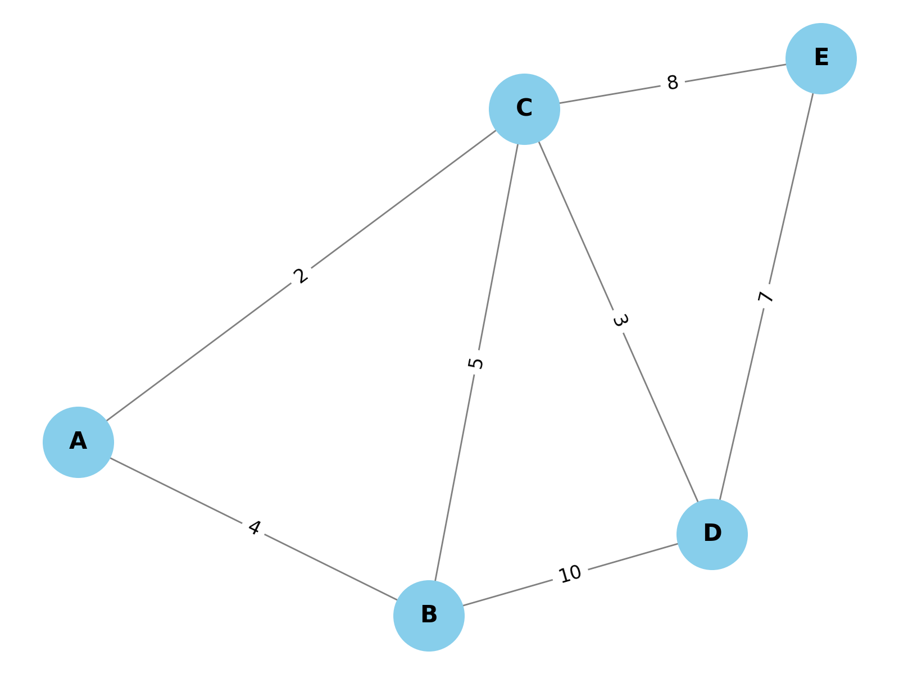
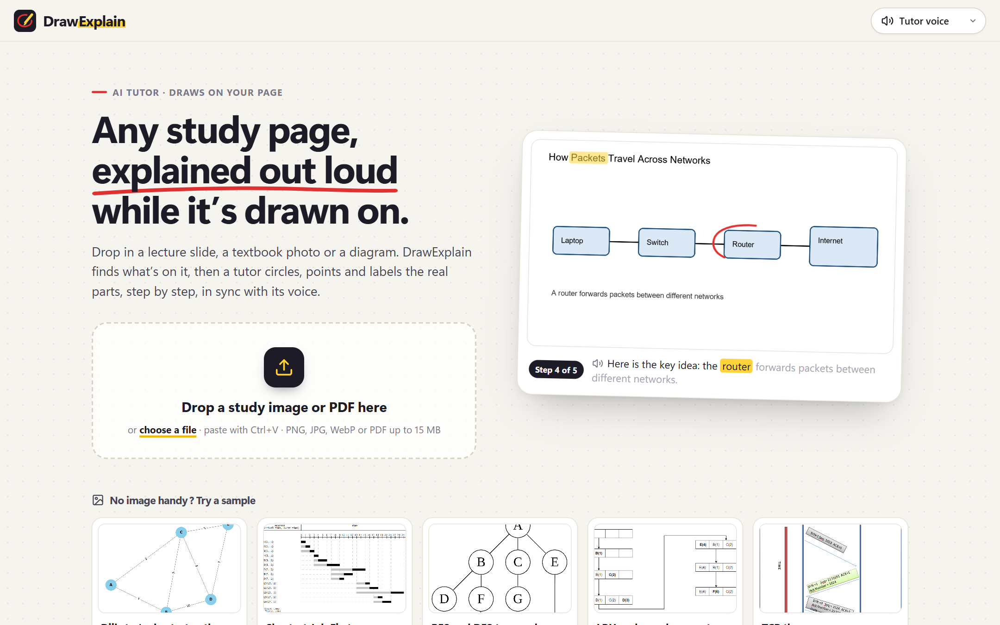
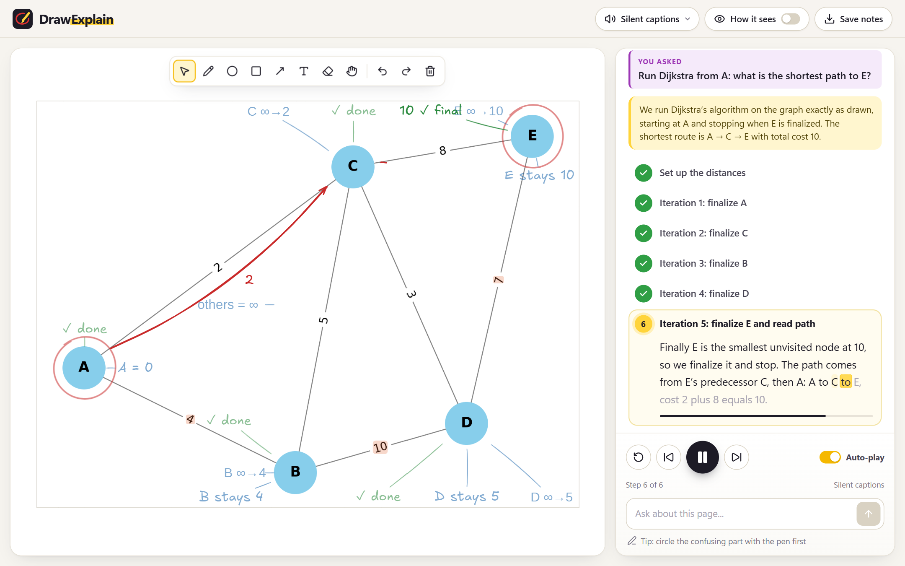
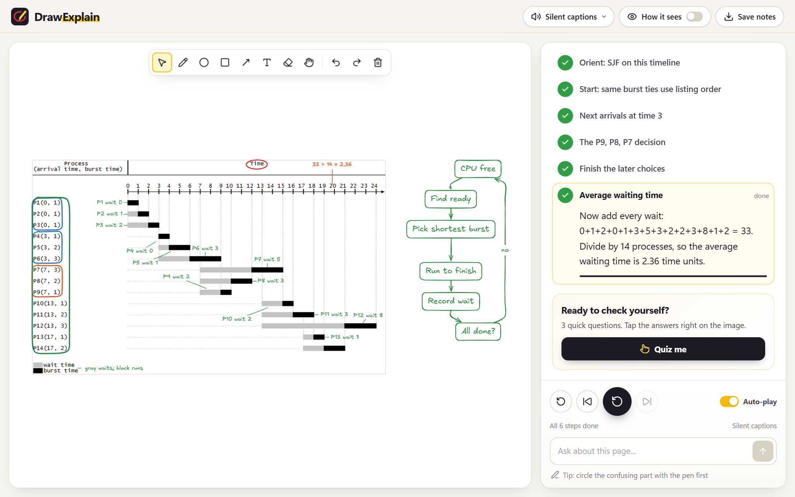
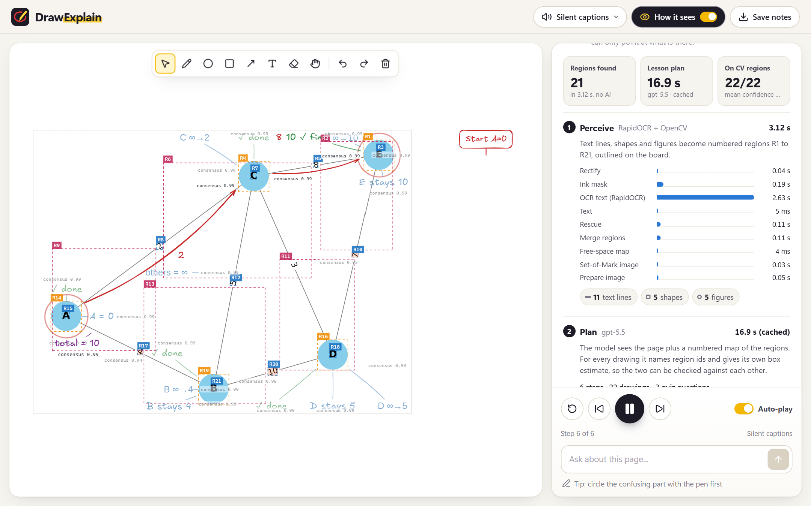

OCR reads every line and label, OpenCV finds the shapes, SAM sharpens unsure ones. Each thing on the page becomes a numbered region.
The model plans the lesson by naming regions, not pixels: what to circle, what to write, and when the voice says it.
Every drawing is cross-checked against the region. For an algorithm, code runs it on the graph or table read off the page.
Marker strokes appear on the untouched page in sync with the narration. Ask a follow-up, then take a tap quiz.
The model never draws and never does the arithmetic. Vision and code decide where, and what the numbers are.
Measured on 407 ground-truth targets in 24 images and 145 fact-checked lessons. Every run is logged in docs/RESULTS_LOG.md.
A slide, a phone photo of a textbook or a PDF lecture. Ask a question or just press Explain.

Dijkstra on the page's own graph: every distance written next to its node, in the real order.

A CPU-scheduling chart: all 14 waiting times and the 2.36 average come from code, not from guessing.

Every drawing is pinned to a region computer vision found, with its confidence and timings.

DrawExplain: a tutor that teaches any page by drawing on it.
Built for Banana Hacks 2026 with OpenAI gpt-5.5, RapidOCR, OpenCV, SAM 2.1, Qwen2-VL, Modal, ElevenLabs and Excalidraw, and developed with Claude Code.